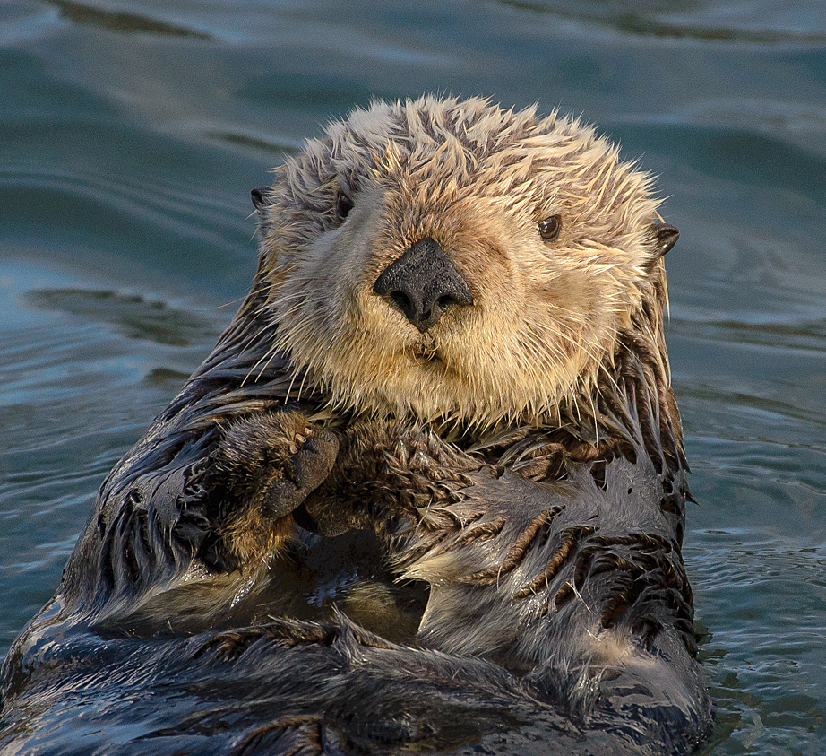

- History
- Habitat
- Diet
- Friends
Sea otters, particularly mothers and pups, sometimes hold hands while floating on their backs. Hand-holding keeps the otters from drifting away from each other and their food source while they sleep. They also sleep wrapped in long strands of kelp like a blanket. The kelp acts like an anchor and prevents them from floating out to the open ocean. When a pup is small, the mother will hold it on her belly to keep it from floating away.
